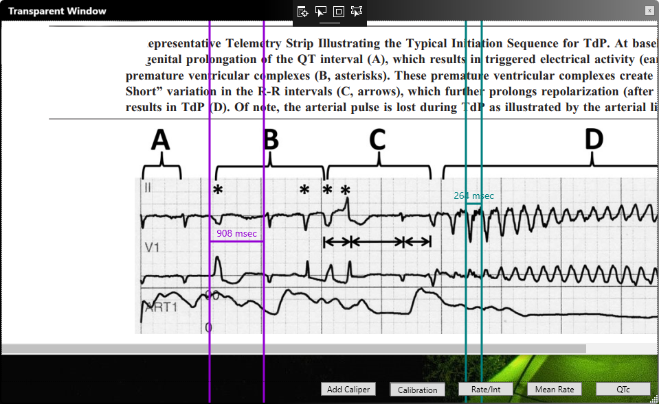

Images
Images
Images include files in typical image formats such as JPG, BMP, and PNG, as well as PDF files. Note that unlike with earlier versions of EP Calipers, it is not necessary to download and install Ghostscript on your computer in order to open PDF files. To load ECG images use one of the following methods.
Loading an image
Open command
Use the File | Open menu command (or keyboard shortcut Ctrl-O) to select an image stored on your computer. You can also use the Open button to do the same thing.
Drag and drop
You can drag and drop an image file onto the program window and it will load.
Right-click on an image file
Even when EP Calipers is not open, you can use the right click menu to open an image file. Select Open with from the right click menu and select EP Calipers to open the image file. This method can also be used to open email attachments.
Multi-page PDFs
If you load a PDF file with multiple pages, the first page will be shown initially. You can use the Image | Previous Page and Next Page menu items to change pages, or the keyboard shortcuts. Note that a big PDF file may take a long time to load.
Opening AliveCor™ ECGs
AliveCor ECGs can be saved as PDF files. Load them with any of the above methods (except drag and drop).
Adjusting the image
Moving the image
If the image is too large for the window, you can either enlarge the window as usual (such as using the Windows maximize button), or scroll around the image using the window scroll bars. You can use the mouse scroll wheel to scroll the image up and down. You can also shrink the image by zooming out as described below.
Rotation
If the ECG image is rotated or tilted, use the Image | Rotation menu commands to correct this. You can rotate by 90°, 1°, or 0.1° increments in either direction. The keyboard shortcuts for rotation are useful. Important: You should rotate your image before calibrating your calipers or making measurements. Once an image has been calibrated, rotation will affect the accuracy of the calibration. For this reason, if you rotate the image after it has been calibrated, the calibration will clear automatically and you will need to recalibrate.
Zooming
You can also use the Zoom buttons (+ and -) at the lower left of the window to zoom in and out. Zooming is also available in the Image menu, which includes a Reset zoom option to restore the original unzoomed image. Note that Caliper calibration does adjust with zooming. There is no need to recalibrate the calipers after zooming.
Saving or printing an edited image
Use the File | Save menu item to save the current image (including calipers) to a file. You can open the saved image file on disk by double clicking it. It is usually possible to print the file from whatever program you have chosen to open image files. You can also print directly from EP Calipers using the File | Print menu item.
Transparent windows
What are transparent windows?
Sometimes it is easier to open an image or PDF file on your Desktop using an external program, such as a web browser or photo app, and then make measurements directly on this image. EP Calipers allows you do this using transparent windows. You can launch one or more transparent windows which allow you to measure whatever is underneath the window using calipers. Transparent windows look like this:

Figure 1: Transparent window mode
Lauching a transparent window
Use the Options | Transparent window menu item to lauch a transparent window. This window has the same functionality as the main window, with buttons to add calipers, calibrate, measure rates, mean rates, and QTc intervals. The right-click menu is the same as the main window, allowing you to change individual caliper colors, march calipers, and tweak caliper positioning.
Things to watch out for with transparent windows
Calibration implications
When you load an image into EP Calipers the normal way and calibrate your calipers, the program will automatically adjust the calibration factor when you zoom the image. With transparent windows the program has no way to figure out if you zoom the underlying image and invalidate calibration. Take care to recalibrate your calipers if you zoom your image in a program external to EP Calipers.